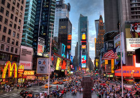

Cape Town is a port city on South Africa's southwest coast, on a peninsula beneath the imposing Table Mountain. Slowly rotating cable cars climb to the mountain’s flat top, from which there are sweeping views of the city, the busy harbor and boats heading for Robben Island in Table Bay. The notorious prison that once held Nelson Mandela is now a living museum.
London, England's capital, set on the River Thames, is a 21st-century city with history stretching back to Roman times. At its centre stand the imposing Houses of Parliament, the iconic 'Big Ben' clock tower and Westminster Abbey, site of British monarch coronations. Across the Thames, the London Eye observation wheel provides panoramic views of the South Bank cultural complex, and the entire city.

Home to the Empire State Building, Times Square, Statue of Liberty and other iconic sites, New York City is a fast-paced, globally influential center of art, culture, fashion and finance. The city's 5 boroughs sit where the Hudson River meets the Atlantic Ocean, with the island borough of Manhattan at the "Big Apple's" core.
Tokyo, Japan's bustling capital, mixes the ultramodern and the traditional, from neon-lit skyscrapers and anime shops to cherry trees and temples. The opulent Meiji Shinto Shrine is known for its towering gate and surrounding forests. The Imperial Palace sits amid sprawling public gardens. The city is famed for its vibrant food scene, and its Shibuya and Harajuku districts are the heart of its trendy teen fashion scene.